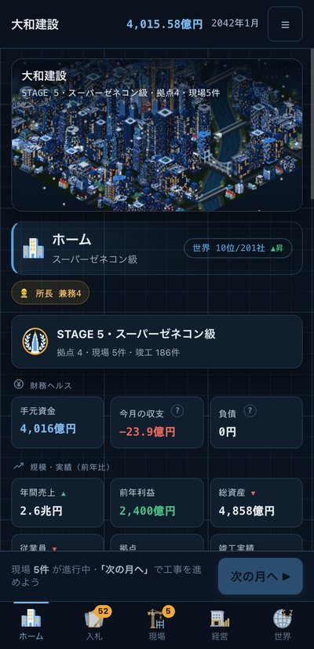
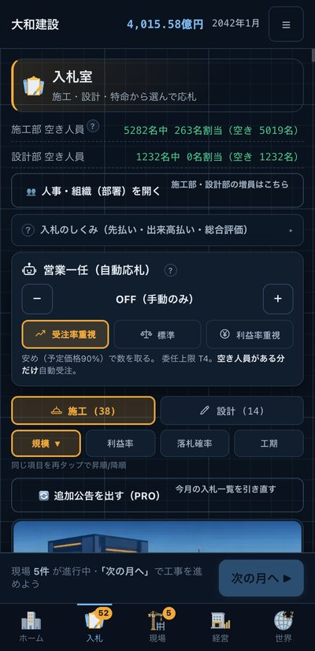
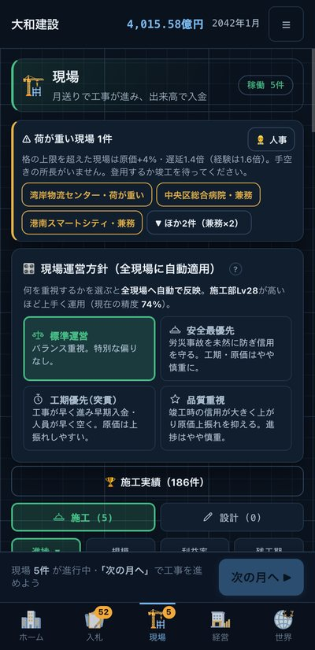
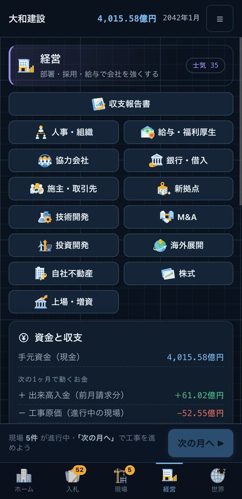
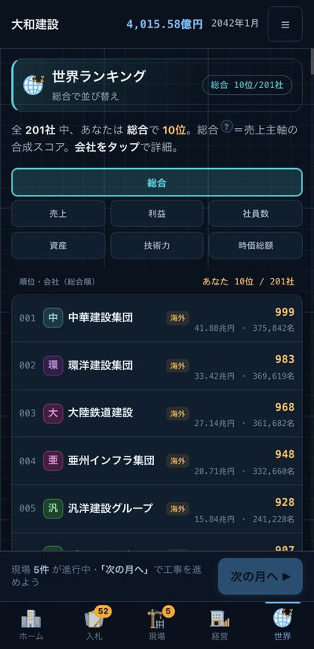
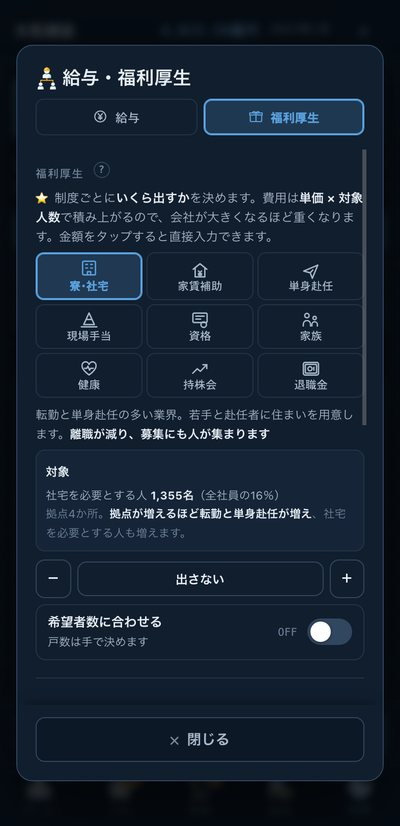
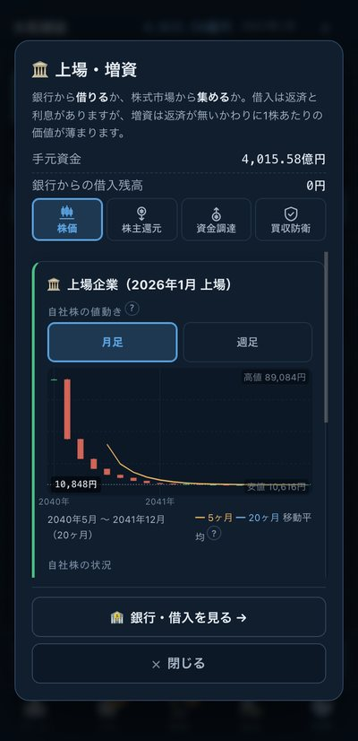

ひと月ずつ、会社を大きくしていく
リアルタイムで進むものは何もありません。「次の月へ」を押したときだけ時間が動きます。
入札する
公告された工事に価格を入れて応札。安くすれば取れますが、利益は薄くなります。
現場を動かす
月を進めると工事が進み、出来高に応じて翌月に代金が入ります。所長と人員の配り方が効きます。
会社を強くする
部署を育て、人を採り、給与と福利厚生を決める。借入・投資・M&A・海外進出も。
頂点を目指す
実績を積んでステージが上がると、扱える工事の格が上がります。目標は世界ランキング1位。
建てたものが、街に残る
竣工した建物が並ぶ、あなたの街
完成した物件はホーム画面の街にそのままの姿で建ちます。戸建てから超高層ビル、橋、トンネル、空港まで。夜になれば明かりが灯ります。
工事中の姿も、工程どおりに変わる
更地から山留・基礎、躯体、外装、そして竣工へ。橋やトンネル、洋上風力はそれぞれの建ち方をします。クレーンは現場の上で動きます。
入札は、値段だけでは決まらない
技術力・施工実績・経営事項審査・施主との関係が効きます。総合評価方式の工事では、安いだけの札は通りません。
人を大事にすると、会社が回る
週休2日（4週8閉所）にすると原価と工期は増えますが、士気と定着率が上がり、残業の積み重なりによる是正勧告を避けられます。
数字が、ちゃんと合う
出来高払い・売掛・仕掛工事・法定福利費・決算・配当まで。毎月の収支報告書と年度の決算書で、会社の状態を確かめられます。
すきま時間で進む
完全ターン制なので、置いていかれることがありません。1ヶ月ぶんだけ進めて閉じる、という遊び方ができます。
画面を見てみる







基本無料で、最後まで遊べます
月額はありません。買い切りのプレミアムは、一度のお支払いで以後ずっとお使いいただけます。
無料
0円（バナー広告あり）
- 世界一まで到達できます。遊べる範囲に制限はありません
- 入札・施工・人事・部署育成・技術開発・投資開発・M&A・海外進出
- 福利厚生はレベル0〜5で設定します
プレミアム（やり込みモード）
買い切り／広告なし
- 協力会社：職種ごとの取引先を束ね、専属会・単価交渉・支払条件・職長会で原価と工期を動かす
- 現場所長：新米から中堅、ベテランへ。副所長として大型現場で鍛え、中途採用でも集める
- 給与と福利厚生：等級別の月給・賞与月数に加え、9つの制度ごとに単価と対象人数を決める
- 株式と上場：取引先の株を持ち、会社を上場させて大型の資金調達を行う
よくある質問
進行中のデータは消えませんか？
セーブはアプリを閉じた瞬間ではなく、1ヶ月進めるたびに書き込んでいます。書き込みは端末のファイルと端末内の保存領域の二重で行い、さらに1世代前の控えを残しています。保存に失敗したときはアプリが画面でお知らせします。
それでも進行が失われた場合は、下の「サポート・お問い合わせ」からご連絡ください。
機種変更したら引き継げますか？
同じApple IDでiCloudにサインインしていれば、セーブはiCloud経由で同期されます。設定画面に「iCloud同期：有効」と出ていればつながっています。新しい端末では起動直後は空に見えることがあり、数秒待つとセーブが降りてきます。
プレミアムは買い直しになりますか？
なりません。同じApple IDであれば、メニューの「ストア」から「購入を復元」を押すと元に戻ります。月額課金ではないので、更新料もかかりません。
進行が止まってしまいました
まずアプリを一度終了して開き直してください。それでも直らないときは、お使いの機種・そのとき開いていた画面・押しても反応しないボタンを添えてご連絡いただけると、こちらで同じ状態を作って調べられます。
画面の縦が短い端末で一覧が見えにくくなる不具合は、バージョン1.6で直しています。
広告は消せますか？
買い切りのプレミアムをご購入いただくと、バナー広告が消えます。無料のままでも、広告が遊びを止めることはありません（動画を見ないと進めない、といった作りにはしていません）。
要望を送りたいのですが
ぜひお願いします。これまでのアップデートは、いただいたご意見から作ったものがほとんどです。App Storeのレビューか、下のお問い合わせからお送りください。